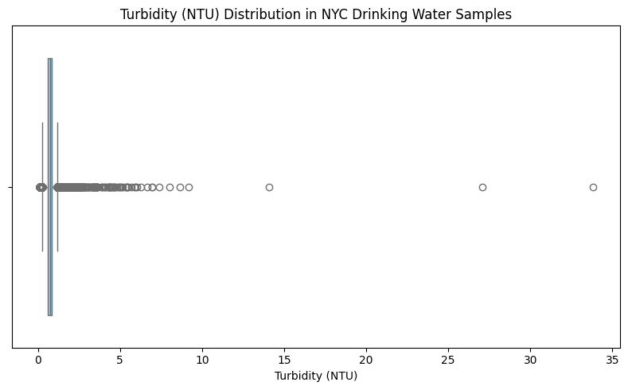
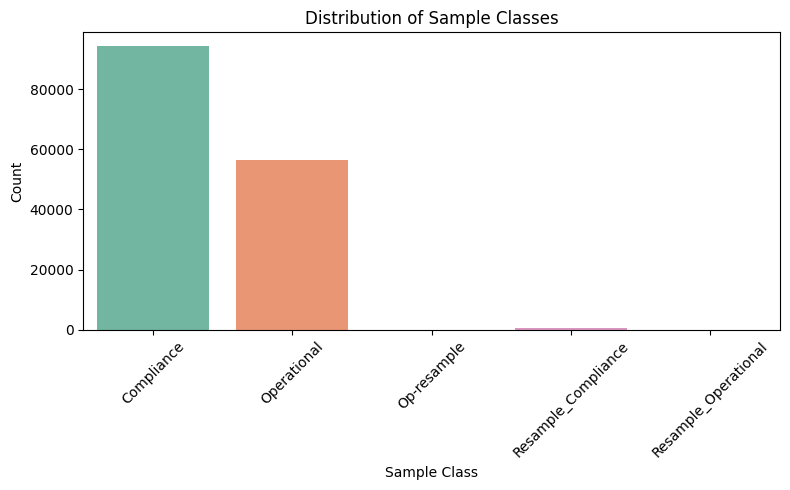
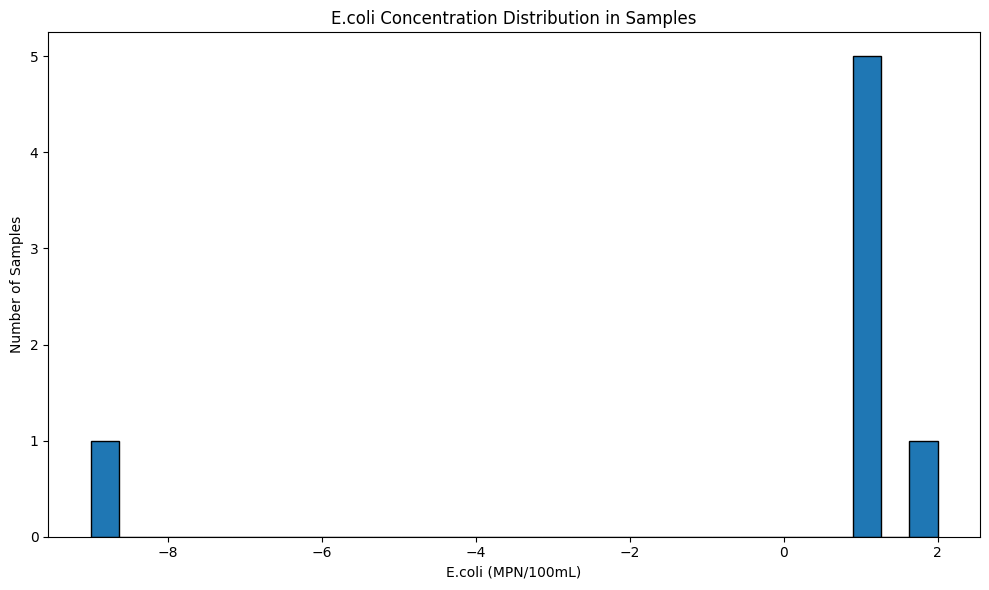
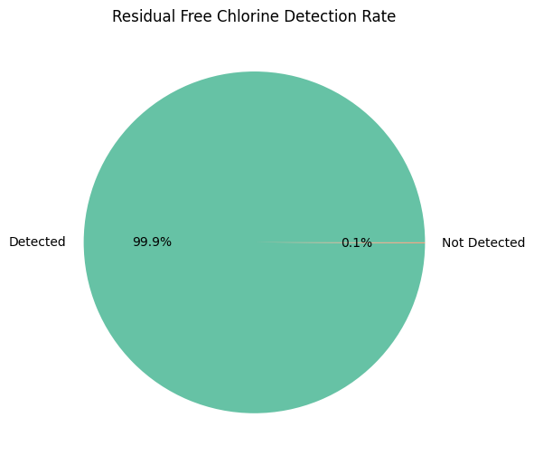

Assignment 05 - Drinking Water Quality Visualization
This page presents five charts generated from a New York City open dataset on drinking water quality. The charts explore different types of visualization and reveal patterns across time, geography, and chemical parameters.
Chart 1: Monthly Water Sample Counts (2015–2024)

This line chart shows the number of water quality samples collected per month over nearly a decade. While overall testing remains consistent, dips in 2020 may reflect pandemic-related disruptions.
Chart 2: Turbidity (NTU) Distribution
This boxplot visualizes the distribution of turbidity, an indicator of water clarity. The majority of samples fall within safe limits, though several high outliers suggest rare instances of murkier water.
Chart 3: Sample Class Breakdown
This bar chart displays the types of water samples collected. Most fall under compliance and operational categories, while resample types are relatively rare, indicating limited follow-up testing.
Chart 4: E.coli Concentration Distribution
This histogram shows E.coli levels in the samples. Nearly all values are at or near zero, reflecting excellent microbial safety, though a few readings may be data entry errors or true outliers.
Chart 5: Residual Chlorine Detection Rate
This pie chart highlights that nearly 100% of water samples contained detectable levels of residual chlorine, confirming effective disinfection throughout the distribution system.
🔗 Google Colab Notebook
View the full code and data processing steps here: My Google Colab Notebook